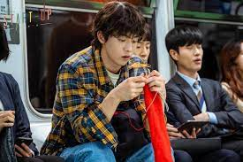

Sinopsis Episode 1
Sinopsis Episode 2
Sinopsis Episode 3
Sinopsis Episode 4
Sinopsis Episode 5
Sinopsis Episode 1

Pada saat penonton mengajukan beberapa pertanyaan sulit, Injae membuat dia tetap tenang dan memenangkan kerumunan dengan sikap yang keren. Injae bahkan dengan kasar menyebut bocah tersebut bajingan. Tetapi, Dalmi (Bae Suzy) mengambil microfon dan bertanya langsung terhadap Injae apakah dia pernah membuat keputusan yang egois di masa lalu.
15 tahun yang lalu, Dalmi di ruangan yang sama bersama Injae. Sementara orang tua mereka berdebat, Dalmi mengawasi dari kejauhan sementara itu Injae memisahkan diri. Bersama-sama mereka menanyakan kepada nenek mereka apakah dia akan tinggal bersama dengan mereka namun dia tidak memilikinya, mengetahui langsung seberapa banyak mereka berdebat.
Sinopsis Episode 2
Ji Pyeong duduk bersama dengan Won Deok, membual mengenai uang yang dia hasilkan. Hanya, Wong Deok menangkapnya dengan menanyakan mengenai kehidupan cintanya. Ji Pyeong dengan cepat mengubah topik pembicaraan dan juga berjanji membayarnya kembali dengan bunga.Menyerahkan kartu nama, Won Deok hanya merobeknya dan juga memberi tahu Ji Pyeong untuk pergi, senang dia baik-baik saja. Menariknya, Dalmi tetap terpaku untuk berusaha mendapati “Dosan”.
Sinopsis Episode 3
Dalmi bahkan memperkenalkan Dosan sebagai kekasihnya. Injae segera menyebutkan proposal perusahaan dan Dosan dipaksa berpikir. Dosan menyerahkan kartu nama dan tersenyum. Injae segera membuat dia lengah dengan bertanya mengenai putaran pendanaan.
Syukurlah Ji Pyeong datang dan berhasil menyelamatkan mereka dari rasa malu. Ji Pyeong bahkan memperkenalkan dirinya pada Dalmi dan yang lain. Mengesampingkan Dosan, Ji Pyeong memperbaurinya mengenai siapa sebenarnya Injae sementara dia melihat terhadap duo tersebut, jelas tertarik terhadapnya.
Ji Pyeong mendorong Dosan memulai menggunakan ekspresi besar dan mengucapkan lirik lagu kebangsaan seolah sedang asik berbicara. Ini berlanjut di luar ketika Ji Pyeong mendorong Dosan mengantar Dalmi pulang. Di luar, Injae melihat dengan iri ketika Ibunya memeluk Dalmi.
Sinopsis Episode 4
Dalmi menuju perpustakaan, dia bertemu salah satu calon kandidat Saha. Mereka berdua bergumul memperebutkan buku terakhir guna membantu bergabung bersama Sand Box. Begitulah, hingga Dalmi mampu menawar jalannya menjadi 5 ribu won.
Dalmi berjalan pergi ketika pustakawan mengeluarkan setumpuk buku baru guna diisi kembali, yang Dalmi gesek. Hanya Saha melakukan hal persis sama, berhasil menipu mereka dari 10 ribu won.
Di lantai atas, Dosan dan Dalmi bertatap muka di perpustakaan dan juga langsung mencapai geladak. Keduanya menyembunyikan buku the Sand Box dari satu sama lain dan juga di luar, celah dalam cerita Dosan terus mengalir.
Sinopsis Episode 5
Chulsan putus asa mencari tahu apa yang terjadi di malam sebelumnya dengan kencan Dosan dan Dalmi. Dosan menghela nafas, memintanya berbicara dengan Dalmi mengenai hal tersebut.
sementara dia terjebak memikirkan yang terburuk mengenai apa yang terjadi, Dalmi sebagai perbandingan diperkuat pertemuan mereka dan mengingat betapa kerenanya Dosan tersebut.
Ini memberinya harapan dan keyakinan untuk maju. Esok hari, anak-anak Samsan tiba di Sand Box dan mengisi tas mereka dengan camilan. Ji-pyeong membawa Dosan menuju samping bertanya seberapa banyak yang diketahui oleh Dalmi mengenai kebenaran.
11 November 2020 / Pemeran Utama 'Start Up'
Bae Suzy sebagai Seo Dal-mi
Heo Jung-eun sebagai Seo Dal-mi muda. Dia bercita-cita menjadi Steve Jobs dari Korea. Dia seorang petualang yang tidak memiliki banyak harta, tetapi memiliki rencana besar untuk dirinya sendiri. Dia juga memiliki pengalaman dalam berbagai pekerjaan paruh waktu dan merupakan orang yang memiliki vitalitas tinggi.
Read More

22 November 2020 / Pemeran Utama 'Start Up'
Nam Joo-hyuk sebagai Nam Do-san
Do-san adalah pendiri Samsan Tech. Dia pernah menjadi kebanggaan keluarganya sebagai seorang jenius matematika, tetapi selama dua tahun terakhir, tidak ada perubahan dengan investasi perusahaannya. Ternyata Seo Dal-mi mengingat Do-san sebagai 'cinta pertamanya yang keren' dan dia memutuskan untuk memulai startup dengan harapan mengubah kesalahpahaman Seo Dal-mi menjadi kenyataan.
Read More
13 November 2022 / Pemeran Utama 'Start Up'
Kim Seon-ho sebagai Han Ji-pyeong
Han Ji-pyeong memulai perusahaan startup untuk melunasi utangnya. Seorang pemimpin tim di SH Venture Capital, keterampilan investasinya yang menakjubkan dan lidahnya yang tajam membuatnya mendapat julukan, "Gordon Ramsay investasi." Meskipun dia jahat bagi kebanyakan orang, dia lebih lembut dari siapa pun kepada satu orang istimewa yang memberinya bantuan besar di masa lalu.
Read More
Giveaway Merchandise Start up
Form Ulasan Start Up
Trailer Start Up
Official Link Youtube